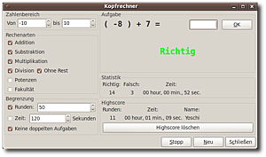

Kopfrechner
Archivierte Anleitung
Dieser Artikel wurde archiviert, da er - oder Teile daraus - nur noch unter einer älteren Ubuntu-Version nutzbar ist. Diese Anleitung wird vom Wiki-Team weder auf Richtigkeit überprüft noch anderweitig gepflegt. Zusätzlich wurde der Artikel für weitere Änderungen gesperrt.
Zum Verständnis dieses Artikels sind folgende Seiten hilfreich:
Für die Installation aus den Quellen: Pakete aus dem Quellcode erstellen
Kopfrechner ist ein freies Programm, um das Kopfrechnen zu trainieren. Es ist in C++ mit wxWidgets geschrieben.
|  |
| Kopfrechner Hauptfenster |
Funktionen:
Grundrechenarten + Potenzen und Fakultäten
Highscores
Zeit- und Rundenbegrenzung
Division ohne Rest
Einschränkung des Zahlenbereichs für jede Zahl einzeln
Funktion, um doppelte Aufgaben in einem Spiel auszuschließen
Automatische Speicherung der Einstellungen
Installation¶
Normalerweise braucht man "Kopfrechner" nicht selbst zu kompilieren, man kann einfach die Binarys in den entsprechenden Archiven verwenden. Zum dauerhaften Installieren der ersten beiden Versionen kopiert man die Datei in den Ordner /usr/local/bin, für die Quelltextversion installiert man das Programm mit dem Makefile. Dazu sind root-Rechte erforderlich. Danach kann man das Programm mit dem Befehl kopfrechner starten.
Kopfrechner wird in 3 Versionen angeboten:
Dynamisch gelinkt¶
Diese Version ist die Standard-Version. Sie benötigt die wxWidgets-Bibliotheken, die im folgenden Paket und seinen Abhängigkeiten enthalten sind [1]:
libwxgtk2.8-0
Statisch gelinkt¶
Diese Version ist am größten und eignet sich vor allem dann, wenn man eine portable Version für zum Beispiel Live-CDs benötigt. Es werden sonst keine weiteren Pakete benötigt.
Hinweis:
Diese Version von "Kopfrechner" ist nicht immer auf dem aktuellsten Stand. Wenn nicht zwingend erforderlich, sollte man deshalb die dynamisch gelinkte Version verwenden.
Quellcode¶
Sollten diese dennoch nicht funktionieren oder möchte man Kopfrechner für andere Plattformen bauen, ist hier die Anleitung, um das Programm selbst zu kompilieren. Benötigt werden hierzu die wxWigets-Bibliotheken inklusive zugehöriger Entwicklungspakete.
Die erforderlichen Dateien befinden sich in folgenden Paketen [1]:
libwxgtk2.8-0
libwxgtk2.8-dev
Im Quelltext-Archiv ist ein Makefile enthalten. Dieses kompiliert [2] man.
Andere Plattformen¶
Experten-Info:
Wegen wxWidgets lässt sich "Kopfrechner" auf fast jeder Plattform kompilieren und benutzen, die auch von wxWidgets unterstützt wird (unter anderem Linux/GTK, Windows, Mac + OS X).
Wer sich auskennt, kann auf der Basis des mitgelieferten Makefiles auch selbst Versionen für verschiedene Betriebssysteme bauen. Bitte dann eine Rückmeldung an Yoschi, damit dieser die Version auch selbst bereitstellen kann.
Downloads¶
Quelltext
 ( ca. 6 kb, erfordert libgtk2.8-0 und libgtk2.8-dev ) (siehe Selbst-Kompilieren)
( ca. 6 kb, erfordert libgtk2.8-0 und libgtk2.8-dev ) (siehe Selbst-Kompilieren)statisch gelinktes Binary
( ca. 1.0 MB )dynamisch gelinktes Binary
( ca. 50 kb, erfordert libgtk2.8-0 )
Hinweis:
Die Binarys wurden mit Ubuntu 9.04 erstellt, aber auf ihre korrekte Funktionsweise getestet. Sollte es trotzdem einmal Probleme geben, hält man sich an den Infos-Abschnitt.
Info¶
Sollte es irgendwelche Probleme geben, sollte man zuerst versuchen, das Programm selbst zu kompilieren. Bei Fragen, Kritik, Wünschen oder Vorschlägen bitte an Yoschi wenden. Wenn das Bedürfnis besteht, wird dieser auch eine Windows-Version erstellen.
Probleme¶
Keine puts () Funktion¶
Make bricht mit diesem Fehler ab:
rechnung.cpp: In member function ‘bool rechnung::ErgebnisIsEqual(double, unsigned int)’: rechnung.cpp:138: error: ‘puts’ was not declared in this scope make: *** [rechnung.o] Fehler 1
Lösung¶
In der Datei rechnung.cpp die Zeile 138 mit zwei Slashes (//) am Anfang der Zeile auskommentieren. Der Befehl ist zu Debugging-Zwecken und wird für die normale Benutzung nicht benötigt.


- Erstellt mit Inyoka
-
 2004 – 2017 ubuntuusers.de • Einige Rechte vorbehalten
2004 – 2017 ubuntuusers.de • Einige Rechte vorbehalten
Lizenz • Kontakt • Datenschutz • Impressum • Serverstatus -
Serverhousing gespendet von